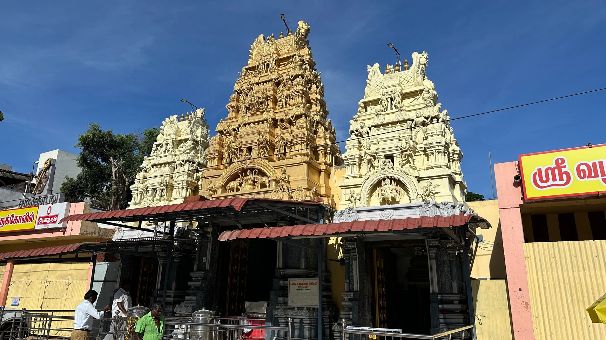

Ramanathapuram or Ramanad palace was built in the 17th century portrays the past glory of King Sethupathi. This palace is a heritage building which is under the control of State Archaeological Department and is best known for its mural paintings with natural dyes picturing the historical days ok King Sethupathi. The palace also holds complex weapons which were used by King Sethupathi on various wars. The palatial complex includes their private royal rooms, many buildings, temple and durbar hall which is today a museum.
A heritage building, Ramanathapuram palace of Tamilnadu has been brought back to its past glory by renovation of the mural paintings depicting the historical days of King Sethupathy’s reign by the Tamil Nadu State Archaeological department. Historically, this palace is important for two reasons. First being that this was the palace where Lord Rama stayed with his wife Sita when he brought her from Lanka. And the second being that this was the Capital city of Sethupathy kingdom. The lifestyle and the important events of the Kingship have all been preserved with the help of mural paintings for more than 300 years. Historical records suggest that the palace was built during the reign of Kizhavan Sethupathi (1674-1710 CE) the most popular among the Sethupathi Kings. The palace building consists of a Darbar hall and an ostentatious dwelling area. The murals found in this building representing the life style of the Sethupathi kings, scenes depicting their battles with the Maratha kings of Thanjavur and their European contacts are quite exquisite. The archaeological museum of this department has been functioning in the Ramalingavilasam Palace which belongs to Sethupathy of Ramnad.
